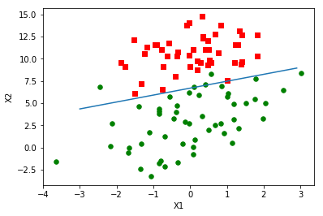

梯度上升法确定最佳回归系数
梯度上升法用来求函数的最大值，而梯度下降法用来求函数的最小值，其实就是一个东西换了个说法而已
def loadDataSet():
dataMat = []
labelMat = []
with open('testSet.txt') as f:
for line in f.readlines():
lineArr = line.strip().split()
dataMat.append([1.0, float(lineArr[0]), float(lineArr[1])]) #增加了一个1.0作为b的乘数
labelMat.append(float(lineArr[2]))
return dataMat, labelMatdataMat, labelMat = loadDataSet()dataMat[[1.0, -0.017612, 14.053064],
[1.0, -1.395634, 4.662541],
[1.0, -0.752157, 6.53862],
[1.0, -1.322371, 7.152853],
[1.0, 0.423363, 11.054677],
[1.0, 0.406704, 7.067335],
[1.0, 0.667394, 12.741452],
[1.0, -2.46015, 6.866805],
[1.0, 0.569411, 9.548755],
[1.0, -0.026632, 10.427743],
[1.0, 0.850433, 6.920334],
[1.0, 1.347183, 13.1755],
[1.0, 1.176813, 3.16702],
[1.0, -1.781871, 9.097953],
[1.0, -0.566606, 5.749003],
[1.0, 0.931635, 1.589505],
[1.0, -0.024205, 6.151823],
[1.0, -0.036453, 2.690988],
[1.0, -0.196949, 0.444165],
[1.0, 1.014459, 5.754399],
[1.0, 1.985298, 3.230619],
[1.0, -1.693453, -0.55754],
[1.0, -0.576525, 11.778922],
[1.0, -0.346811, -1.67873],
[1.0, -2.124484, 2.672471],
[1.0, 1.217916, 9.597015],
[1.0, -0.733928, 9.098687],
[1.0, -3.642001, -1.618087],
[1.0, 0.315985, 3.523953],
[1.0, 1.416614, 9.619232],
[1.0, -0.386323, 3.989286],
[1.0, 0.556921, 8.294984],
[1.0, 1.224863, 11.58736],
[1.0, -1.347803, -2.406051],
[1.0, 1.196604, 4.951851],
[1.0, 0.275221, 9.543647],
[1.0, 0.470575, 9.332488],
[1.0, -1.889567, 9.542662],
[1.0, -1.527893, 12.150579],
[1.0, -1.185247, 11.309318],
[1.0, -0.445678, 3.297303],
[1.0, 1.042222, 6.105155],
[1.0, -0.618787, 10.320986],
[1.0, 1.152083, 0.548467],
[1.0, 0.828534, 2.676045],
[1.0, -1.237728, 10.549033],
[1.0, -0.683565, -2.166125],
[1.0, 0.229456, 5.921938],
[1.0, -0.959885, 11.555336],
[1.0, 0.492911, 10.993324],
[1.0, 0.184992, 8.721488],
[1.0, -0.355715, 10.325976],
[1.0, -0.397822, 8.058397],
[1.0, 0.824839, 13.730343],
[1.0, 1.507278, 5.027866],
[1.0, 0.099671, 6.835839],
[1.0, -0.344008, 10.717485],
[1.0, 1.785928, 7.718645],
[1.0, -0.918801, 11.560217],
[1.0, -0.364009, 4.7473],
[1.0, -0.841722, 4.119083],
[1.0, 0.490426, 1.960539],
[1.0, -0.007194, 9.075792],
[1.0, 0.356107, 12.447863],
[1.0, 0.342578, 12.281162],
[1.0, -0.810823, -1.466018],
[1.0, 2.530777, 6.476801],
[1.0, 1.296683, 11.607559],
[1.0, 0.475487, 12.040035],
[1.0, -0.783277, 11.009725],
[1.0, 0.074798, 11.02365],
[1.0, -1.337472, 0.468339],
[1.0, -0.102781, 13.763651],
[1.0, -0.147324, 2.874846],
[1.0, 0.518389, 9.887035],
[1.0, 1.015399, 7.571882],
[1.0, -1.658086, -0.027255],
[1.0, 1.319944, 2.171228],
[1.0, 2.056216, 5.019981],
[1.0, -0.851633, 4.375691],
[1.0, -1.510047, 6.061992],
[1.0, -1.076637, -3.181888],
[1.0, 1.821096, 10.28399],
[1.0, 3.01015, 8.401766],
[1.0, -1.099458, 1.688274],
[1.0, -0.834872, -1.733869],
[1.0, -0.846637, 3.849075],
[1.0, 1.400102, 12.628781],
[1.0, 1.752842, 5.468166],
[1.0, 0.078557, 0.059736],
[1.0, 0.089392, -0.7153],
[1.0, 1.825662, 12.693808],
[1.0, 0.197445, 9.744638],
[1.0, 0.126117, 0.922311],
[1.0, -0.679797, 1.22053],
[1.0, 0.677983, 2.556666],
[1.0, 0.761349, 10.693862],
[1.0, -2.168791, 0.143632],
[1.0, 1.38861, 9.341997],
[1.0, 0.317029, 14.739025]]import numpy as npdef sigmoid(x):
return 1.0/(1+np.exp(-x))
#梯度上升
def gradAscent(dataMat, labelMat):
dataMatrix = np.mat(dataMat)
labelMatrix = np.mat(labelMat).transpose()
m,n = np.shape(dataMatrix)
alpha = 0.001
maxCycles = 500 #最大循环次数
weights = np.ones((n,1))
for i in range(maxCycles):
h = sigmoid(dataMatrix * weights)
error = labelMatrix - h
weights = weights + alpha * np.dot(dataMatrix.transpose(), error)
return weightsweights = gradAscent(dataMat, labelMat)
weightsmatrix([[ 4.12414349],
[ 0.48007329],
[-0.6168482 ]])分析数据
import matplotlib.pyplot as plt
%matplotlib inlinedef plotBestFit(weights):
dataMat, labelMat = loadDataSet()
dataArr = np.array(dataMat)
m,n = np.shape(dataArr)
xcoord0 = []
ycoord0 = []
xcoord1 = []
ycoord1 = []
for i in range(m):
if int(labelMat[i]) == 0:
xcoord0.append(dataArr[i][1])
ycoord0.append(dataArr[i][2])
else:
xcoord1.append(dataArr[i][1])
ycoord1.append(dataArr[i][2])
fig = plt.figure()
ax = fig.add_subplot(111)
ax.scatter(xcoord0, ycoord0, s=30, c='red', marker='s')
ax.scatter(xcoord1, ycoord1, s=30, c='green')
x = np.arange(-3, 3, 0.1)
y = (-weights[0] - weights[1]*x)/weights[2]
ax.plot(x,y)
plt.xlabel('X1')
plt.ylabel('X2')
plt.show()plotBestFit(weights.getA()) #将matrix形式变成array
weights.getA()array([[ 4.12414349],
[ 0.48007329],
[-0.6168482 ]])随机梯度上升
之前梯度上升法每更新一次系数就要遍历整个数据集，计算复杂度较高。一种改进方法是一次仅用一个样本点来更新系数，称为随机梯度下降法，这是一种在线学习算法
def stocGradientAscent(dataMat, labelMat):
m, n = np.shape(dataMat)
alpha = 0.01
weights = np.ones(3)
w0 = [weights[0]]
w1 = [weights[1]]
w2 = [weights[2]]
for i in range(m):
h = sigmoid(sum(dataMat[i] * weights))
error = labelMat[i] - h
weights += alpha * error * np.array(dataMat[i])
w0.append(weights[0])
w1.append(weights[1])
w2.append(weights[2])
fig = plt.figure()
ax1 = plt.subplot(311)
ax2 = plt.subplot(312)
ax3 = plt.subplot(313)
ax1.plot(list(range(m+1)), w0)
ax2.plot(list(range(m+1)), w1)
ax3.plot(list(range(m+1)), w2)
plt.show()
return weightsweights = stocGradientAscent(dataMat, labelMat)
weightsarray([ 1.01702007, 0.85914348, -0.36579921])plotBestFit(weights)
发现这个错了大概三分之一，但是它其实只迭代了一轮所有的值，每次更新一个点，下面我们可以改进一下让它迭代更多轮数
def stocGradientAscentModi(dataMat, labelMat,numIter=150):
m, n = np.shape(dataMat)
alpha = 0.01
weights = np.ones(n)
w0 = [weights[0]]
w1 = [weights[1]]
w2 = [weights[2]]
for j in range(numIter):
dataIndex = list(range(m))
for i in range(m):
alpha = 4/(1+i+j) + 0.01 #alpha随着迭代次数的增加逐渐减小
randIndex = int(np.random.uniform(0,len(dataIndex))) #每次随机更新
h = sigmoid(sum(dataMat[randIndex] * weights))
error = labelMat[randIndex] - h
weights += alpha * error * np.array(dataMat[randIndex])
w0.append(weights[0])
w1.append(weights[1])
w2.append(weights[2])
del (dataIndex[randIndex])
fig = plt.figure()
ax1 = plt.subplot(311)
ax2 = plt.subplot(312)
ax3 = plt.subplot(313)
ax1.plot(list(range(m*numIter+1)), w0)
ax2.plot(list(range(m*numIter+1)), w1)
ax3.plot(list(range(m*numIter+1)), w2)
plt.show()
return weightsweights = stocGradientAscentModi(dataMat, labelMat,40)weightsarray([15.34264902, 0.707243 , -2.3652151 ])plotBestFit(weights)我们只对数据集做了40次遍历，但是效果已经非常好了，而最开始我们做了100次
实践：从疝气病预测病马的死亡率
准备数据：处理数据中的缺失值
原有的数据是有缺失的，我们将缺失值全部置0
def classify(data, weights):
prob = sigmoid(sum(data * weights))
if prob > 0.5:
res = 1
else:
res = 0
return resdef colicTest():
fTrain = open('horseColicTraining.txt')
fTest = open('horseColicTest.txt')
trainingSet = []
trainingLabels = []
for line in fTrain.readlines():
currLine = line.strip().split('\t')
lineArr = []
for i in range(21): #每组数据21个特征一个标签
lineArr.append(float(currLine[i]))
trainingSet.append(lineArr)
trainingLabels.append(float(currLine[21]))
trainWeights = stocGradientAscentModi(trainingSet, trainingLabels, 500)
errorCount = 0
numTestData = 0
for line in fTest.readlines():
numTestData += 1
currLine = line.strip().split('\t')
lineArr = []
for i in range(21):
lineArr.append(float(currLine[i]))
if int(classify(lineArr, trainWeights)) != int(currLine[21]):
errorCount += 1
errorRate = errorCount/numTestData
print('the error rate of this test is: %f' %(errorRate))
return errorRatecolicTest()/Users/lovelyfrog/Library/Python/3.6/lib/python/site-packages/ipykernel_launcher.py:2: RuntimeWarning: overflow encountered in expthe error rate of this test is: 0.373134
0.373134328358209#取十次平均误差
def multiTest():
numTests = 10
errorSum = 0
for i in range(numTests):
errorSum += colicTest()
print('after %d iterations the average error rate is:%f' %(numTests, errorSum/numTests))multiTest()/Users/lovelyfrog/Library/Python/3.6/lib/python/site-packages/ipykernel_launcher.py:2: RuntimeWarning: overflow encountered in expthe error rate of this test is: 0.358209
the error rate of this test is: 0.343284
the error rate of this test is: 0.358209the error rate of this test is: 0.373134
the error rate of this test is: 0.283582the error rate of this test is: 0.343284the error rate of this test is: 0.358209the error rate of this test is: 0.358209the error rate of this test is: 0.388060the error rate of this test is: 0.313433
after 10 iterations the average error rate is:0.34776110次迭代之后平均错误率35%，这个结果已经很不错了鉴于有30%的数据缺失，事实上如果调整colicTest()中的迭代次数和迭代步长，平均错误率会降到20%左右